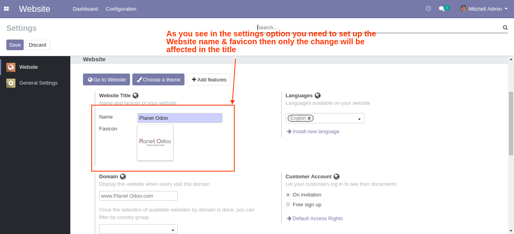

Want to debrand your company website? Debranding Kit module developed by Planet Odoo
helps you to change the aesthetic look of Odoo software via customizing them
with logo and other branding changes. The module helps you to change almost every area of Odoo visuals,
delivering a brand new customized website.
Below Remove in Odoo:
1. Deletes Odoo label in footer
2. Replaces "Odoo" in page title
3.Deletes Apps and other blocks from Settings/Dashboard.
4.Odoo accounts and documentation is removed from the dropdown list.
5.Deletes Apps and other blocks from Settings/Dashboard
6.Update Odoo titles on Error Dialogues
7.Replaces "Odoo" in Dialog Box
8.Deletes "Odoo" in a request message for permission desktop notifications
9. Replaces "Odoo" in help message for empty list
10.Replaces default favicon to custom fevicon

By default the module replaces "Odoo" to "Your Company/Tag".
To configure module open Settings\\System Parameters and modify
- backend_debranding_v12.new_title (put space in value if you don't need Brand in Title)
- backend_debranding_v12.new_name (your Brand)
- backend_debranding_v12.favicon_url
- backend_debranding_v12.planner_footer